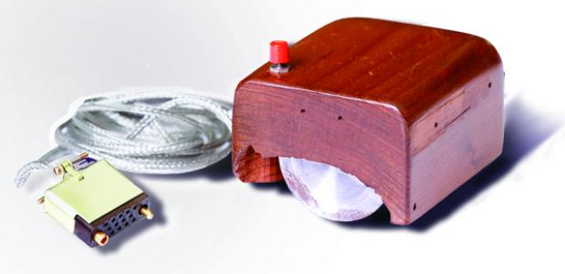

History van de computermuis
De computermuis is uitgevonden door Douglas Engelbart, hij werkte vanaf de jaren 50 bij het onderzoekcentrum in stanford Universiteit, dat is een van de meest bekende uni's die in de US liggen. Het heeft een goeie 10 jaar geduurd voordat hij met de eerste prototype kwam, zie hier onder hoe de eerste muis ooit uitzag. Oftewel de oermuis hoe sommige mensen deze muis het hebben benoemd.

De computermuis werd pas vanaf 1981 voor het publiek beschikbaar toen Xerox (een bedrijf) voor het eerst bij een van hun computers leverde. Douglas heeft het niet in z'n eentje uitgevonden hij werke namelijk samen met William English in het Stanford Research Institute oftewel SRI. Uiteindelijk was het Engelbart die de eerste prototype zelf in elkaar heeft geschroeft, want hij was een van de personen die met zn handen alles kon maken wat ze eenmaal hadden gezien. Op de eerste prototype van de muis zat er maar slechts een knop op, maar ze gingen al snel over naar drie knoppen die ze uit eindelijk in de toekomst hebben toe gebracht. Ze gebruikte toen die tijd eenvoudige drukschakelaars die des tijd in de handel verkrijgbaar waren. Maar even terug naar de eerste muis die werd meegeleverd bij de Star-computer die zie je hier onder,

Soorten muizen
tegenwoordig heb je meerder soorten muizen, hier zijn een paar voorbeelden,
Mechanishe muis
De mechanishe muis heeft onderaan in de muis een zware, met stroef meteriaal beklede kogel of te wel een muisballetje, die bij de beweging van de muis over een plat oppervlakte, die mee gaat met de wrijving van de muis. deze rolbeweging wordt overbracht op twee assen, die onder een hoek van 90 graden met elkaar zijn gemonteerd. De assen omzetten die bewegingen in elektronische impulsen. Deze informatie wordt door de muisdriver en het besteuringssysteem uiteindelijk omgezet naar een beweging van de cursor op de monitor. De kogel kan ook vuil meenemen waardoor de assen ook verstopt kunnen worden, daardoor kunnen de bewegingen verhinderen, en kunnen ze soms later reageren of niet eens kunnen reageren. Om deze reden kun je het balletje eruit halen om het schoon te maken, anders heb je deze probleem best vaak. Zie hieronder hoe zoon muis van binnen uitzag.

Optische muis
Dit is een muisvariant die minder gevoelig is voor vuil en slijtage en gladheid van het onderliggende oppervlakten, deze muis noem je de Optische muis. Deze muis heeft een LED of in het geval van een lasermuis een laser met een mini CCD camera (is een mini camera), die de beweging van de muis opneemt, daardoor is de beweging van de cursor bij gebruik van een optische muis veel accurater dan een mechanishe muis. De optische muis bestaan al best lang maar een nadeel van de muis is, dat de muis vaak van een speciale muismat gebruik moet maken, anders kan het soms niet werken, maar dat gebeurden vaak met de eerste optische muizen, maar dat is nu niet meer. Tegenwoordig hebben muizen geen muismat meer nodig, omdat ze nu bijna op alle opvlakkten kunnen werken. De meeste optische muizen krijgen nog wel eens problemen als ze op een ondergrond komen die niet werkt voor de muis, dan kan de curser raar doen. Hieronder zie je hoe een optische muis eruit ziet.

Trackball
Nog een andere variant van een muis is een Trackball, De rolletje zit dan bovenaan op de muis, dit heeft een paar voordelen, een voorbeeld van een van de voordelen zijn, dat de muis op een plek blijft staan want het hoeft niet te bewegen, nog een voorbeeld is dat het veel minder snel vies wordt, omdat het niet op een oppervlakte staat, dus er komt bijna geen vuil in. De nadelen van dit soort muis zijn, dat je op een groot oppervlakt moet bewegen, dat kan wat tijd kosten omdat je met een trackbal moet werken, die zijn minder snel. Hier onder zie je hoe zoon trackball muis eruit ziet.
Pen tablet
Een ander soort type muis is een pen tablet. Dit is een pen met een bijbehorende tablet waarop je kan schijrven of als een muis kan gebruiken. Dit soort type muis is juist eigenlijk bedoelt voor artistiek werk, want je gebruikt meestal deze pen om te teken virtueel, en als je er best goed er in bent dan kan je best mooie tekeningen maken. Verder wordt deze pen ook gebruikt in de klinisch-chemische laboratria, om bijvoorbeeld cellen aan te wijzen. De pen wordt ook gebruikt voor een alternatief muis wat ik al eerder aangaf. Zie hieronder hoe zoon Pen-tablet eruit ziet.